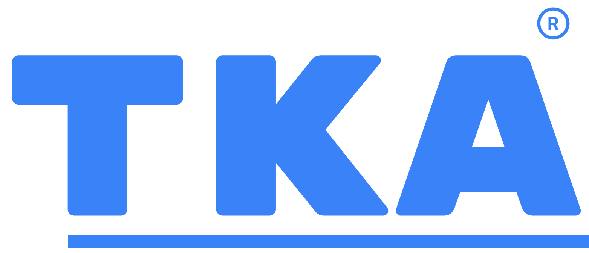

✅
اشتراك شهري
1200
جنيه
/ شهر
مناسب للتجربة - البرايفت سيشن
اشترك الآن

TKA-Egyptتقدر تختار نظام الاشتراك الأنسب لك من بين الخطط التالية:
🎯 ميزة الاشتراك السنوي: الاشتراك السنوي بيوفر لك 6120 جنيه مقارنة بالاشتراك الشهري، وده مش مجرد توفير مالي، لكنه كمان استثمار في استمرارية تعليم أفضل وخطة أوضح لابنك على مدار السنة.
✅ رسوم تسجيل إدارية 200 جنيه تدفع لمرة واحدة